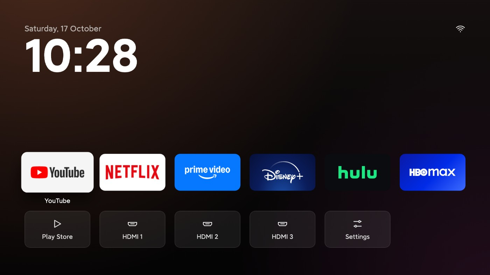

TV Detox · 消费DIY · 用户故障推动修复
TV Detox保住TCL的HDMI画面，让Home键回到简洁桌面 2026-10-26T05:39:20Z ·
01 保留原桌面，再改变Home的去向 02 看得见游戏机，不代表输入能播放 03 长按输入改名，音画设置回到厂商面板 04 真实机型报告也保留未解决的部分 
TV Detox官方桌面截图；应用、输入与时钟。 ↗ 原始图证 保留原桌面，再改变Home的去向 TV Detox的安装流程让用户在同一家庭网络的电脑上打开Claude Code或Codex，描述电视型号和想保留的应用，由代理整理清单、解释每项修改并请求确认。它关闭应用而不删除，留下恢复办法，再装上简洁桌面；AI参与的是这段安装工作。10月25日的1.5.4增加Home按钮入口，用户在辅助功能中开启后，Google TV原桌面继续存在，按Home或重启时转到新桌面。长按返回可暂回Google界面，直到重新打开新桌面或重启；连续启动失败会停止重定向。项目报告在Chromecast HD的Android 14真机及模拟器上测试过这条路径。
看得见游戏机，不代表输入能播放 一次具体故障改变了清理规则：TCL Smart TV Pro用户因为不看天线或有线电视，按旧说明移除了com.tcl.tv。电视仍能识别HDMI 3上的Steam Deck，遥控器输入菜单和桌面磁贴却都打不开画面。提交者检查后发现，信号服务与显示画面的活动属于不同软件包；被移除的直播应用正是唯一能处理该输入的播放器。恢复它以后，同一台Google TV 14电视重新显示HDMI，输入选择器也正常。1.5.5将它改为禁止关闭项，撤回旧建议并补上恢复说明。这是单台设备上的失效与恢复记录，不能当作全系列覆盖证明。
长按输入改名，音画设置回到厂商面板 同一轮更新改善了日常遥控操作。长按HDMI磁贴可以选PlayStation、Xbox、Switch等预设，也能用电视键盘输入名称；隐藏的端口可从添加应用磁贴的长按菜单找回。这些名字只改变新桌面，不会重写电视其他界面的端口名称。1.5.6又修正TCL Q651G的音量、画面和亮度入口：该型号把厂商面板放在系统设置软件包内，旧逻辑找不到预期包名，便退回普通Android页面。新逻辑增加实际存在的入口，其他机型仍按可解析的路径打开。贡献者报告在50英寸Q651G验证了画面面板，另为两台Q651G整理了使用记录。
真实机型报告也保留未解决的部分 贡献者没有把所有现象都写成确定修复：两台Q651G在安装中遗忘Wi-Fi，原因尚未确认；部分遥控器应用键仍依赖被关闭的厂商组件。Philips的Home路由修复只模拟了Android 9与11行为，发布说明明确没有真机确认。项目仍要求保留系统关键应用、检查重启后的行为，并在完成后关闭调试连接；这些是安装控制，不是桌面自带的智能功能。它可以撤回软件开关，但原说明也记录过部分电视需要恢复出厂设置的启动故障。用户得到的是更具体的机型经验和更少的误删建议，仍须确认自己的固件、输入及遥控按键组合。
← 回到项目，继续翻页